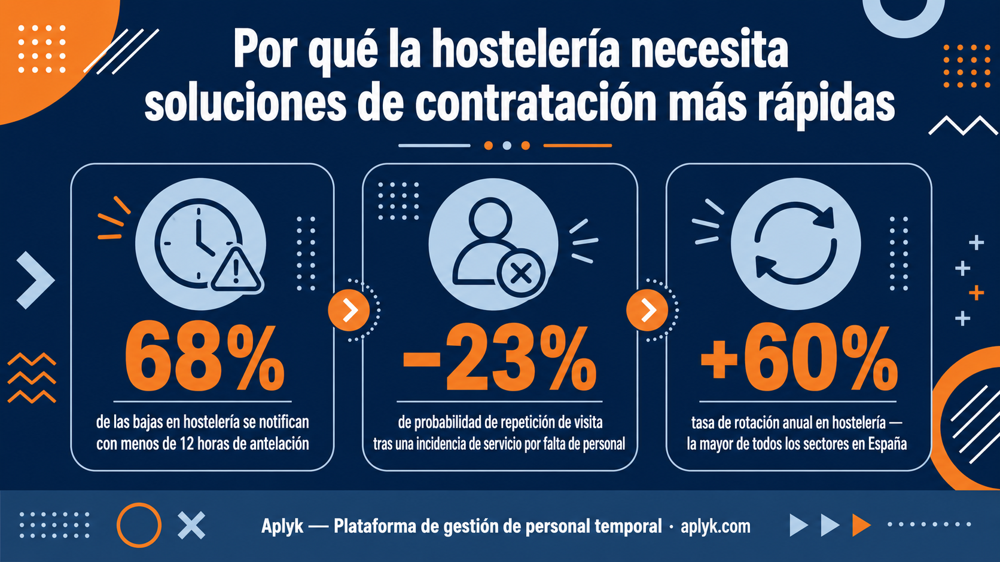
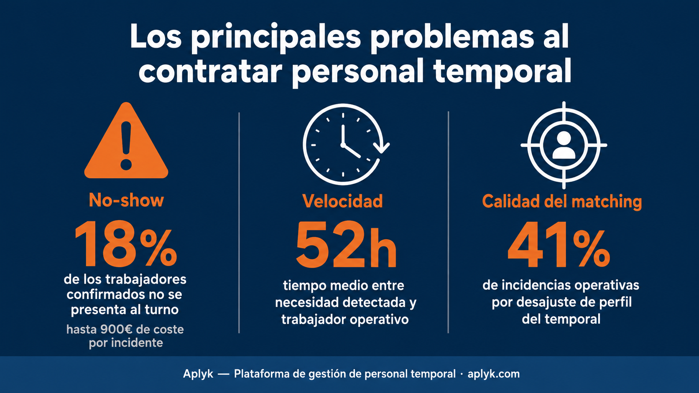
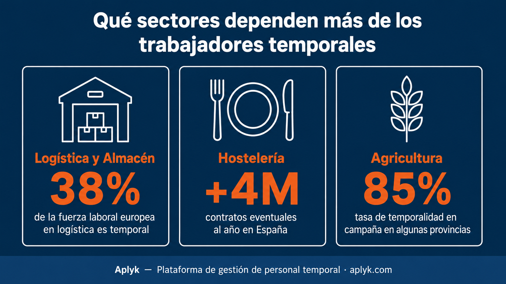

Cómo destacar al aplicar a trabajos temporales
En un mercado donde el 75% de las candidaturas no reciben respuesta, destacar no depende de tener el mejor CV — depende de entender qué señales buscan realmente las empresas y las plataformas cuando seleccionan a quién contratan primero. Esas señales no son las que la mayoría de los candidatos están enviando.
Cómo reducir los no-shows en la contratación temporal
El no-show no es inevitable: es un problema de diseño de proceso que puede reducirse con confirmación activa, recordatorios y seguimiento.
Contratación temporal en almacenes: retos y oportunidades
Los almacenes son el corazón operativo del comercio moderno y uno de los sectores donde la contratación temporal tiene mayor impacto operativo.
Por qué el matching en tiempo real es el futuro del trabajo temporal
El matching en tiempo real no es una mejora incremental sobre el modelo de agencia: es un cambio de paradigma en la forma de cubrir turnos temporales.
Cómo los trabajos temporales pueden ayudarte a generar ingresos más rápido
Para muchos, el trabajo temporal es una forma rápida y flexible de generar ingresos extra en días, no en meses.
Por qué la contratación temporal sigue siendo demasiado lenta
El sector lleva décadas sabiendo que contratar personal temporal es lento, costoso y frustrante, pero pocos han analizado con precisión dónde están realmente los cuellos de botella.

Por qué la hostelería necesita soluciones de contratación más rápidas
La hostelería es el sector que más sufre cuando un turno queda sin cubrir, porque el impacto llega directamente al cliente y a la cuenta de resultados.
Cómo la IA puede mejorar el matching entre empresas y candidatos
El matching manual entre empresas y trabajadores temporales lleva décadas produciendo los mismos errores — perfiles inadecuados, no-shows y cobertura de última hora.
¿Por qué muchos trabajadores aplican a ofertas y no reciben ninguna respuesta?
Aplicar a una oferta de trabajo temporal y no recibir respuesta no es mala suerte — es el resultado predecible de procesos de selección diseñados para ignorar a los candidatos.

Los principales problemas al contratar personal temporal
El no-show, los procesos lentos y el matching de baja calidad no son problemas de mercado — son síntomas de un modelo de contratación temporal que lleva décadas sin rediseñarse.

Qué sectores dependen más de los trabajadores temporales
Logística, hostelería y agricultura dependen cada vez más del trabajo temporal para responder a picos de demanda y estacionalidad. Analizamos por qué estos sectores no pueden funcionar sin talento temporal y cómo la tecnología puede cambiar su forma de contratar.

Cómo la tecnología está cambiando la contratación temporal
La tecnología está transformando la contratación temporal con automatización, matching por IA y experiencia móvil — redefiniendo cómo las empresas cubren turnos en minutos, no en días.

Qué buscan realmente los trabajadores temporales en una empresa
El 58% rechazaría una oferta mejor pagada si la empresa tiene mala reputación. Lo que realmente mueve a los trabajadores eventuales no es solo el dinero.

Cómo reducir el tiempo de cobertura de turnos de 48 horas a 38 segundos
La gestión tradicional del staffing temporal consume horas de trabajo administrativo cada semana. Te explicamos cómo el matching con IA transforma este proceso.
No hay posts en esta categoría todavía.